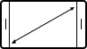

Просто
элегантный
Элегантность в своей чистейшей форме. Изготовленные в духе минимализма для получения максимального удовольствия прочное заднее 3D-стекло и оптимальный 5.7-дюймовый FHD sAMOLED экран плавно сливаются воедино, создавая удивительный бесшовный дизайн.
Экран 5.7”Удобный и
эргономичный
Плавные линии корпуса, отсутствие выступов камеры, утонченная и элегантная отделка позволяют получить настоящее удовольствие от использования смартфона.